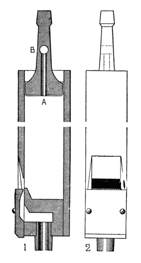
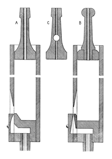

|
Flauto d'Amore Italian Flûte d'Amour French |
These name have been given to small-scaled flute stops of 8' or 4' pitch having a variety of forms and tonalities. Wedgwood and Irwin describes its tone as being slightly stringy, whereas Audsley describes it as a cross between the Lieblich Gedeckt and the Rohrflöte. Audsley, Bonavia-Hunt and Grove all specify wood as the material. Grove says it is sometimes stopped, while Skinner defines it as a small-scaled 4' Gedeckt. Bonavia-Hunt calls it a miniature Waldflöte and specifies an inverted mouth, with a body that is sometimes triangular. Williams defines Flûte d'Amour as a �wide, stopped Dutch flute� around 1772. Audsley provides the drawings reproduced here, with the following description:
 The pipes partake of the character of the Lieblichgedeckt and the Rohrflöte, being small in scale and general formation like those of the former; and having perforated stoppers like those of the latter stop. The construction of the Flauto d'Amore pipe is clearly shown in the accompanying illustration. In the Longitudinal Section, 1, the formation of all portions of the mouth is correctly delineated; and the manner in which the stopper, A, is formed and perforated is shown. It will be observed that the vertical perforation (Fr. cheminée) does not extend through the entire length of the stopper, but opens into the larger transverse perforation, B. This is an important expedient. As the performations of the stoppers affect the quality of the tone of the pipes, their lengths must, of necessity, be graduated regularly throughout the compass of the stop: and as this graduation of length would be difficult, and would make the stoppers in the higher octaves inconveniently short, if the perforations were carried through them and dictated their lengths, the expedient of the transverse perforation was happily adopted, rendering the correct graduation possible without interfering with the convenient length of the stoppers. The transverse perforations would not be required inthe stoppers of the lower pipes, for they could be perforated throughout and made of the proper graduated lengths. The diameters of the vertical perforations may vary according to the scale of the pipes and the quality of the tone desired: that of the largest pipe need not exceed 3/8 inch, while that of the smallest pipe may be 1/8 inch. For its most characteristic tones, the Flauto d'Amore should be voiced on wind of from 1 1/2 to 2 1/2 inches.
Irwin claims it can be either wood or metal, open or half-covered, sometimes with conical tops if made of metal. Wedgwood, Bonavia-Hunt and Locher consider it to be synonymous with Flauto Amabile. Wedgwood also considers it to be synonymous with Amoroso and Flauto Amoroso. Locher also considers it to be synonymous with Amorosa. Maclean considers is to be synonymous with Flûte Douce and Lieblichflöte. Audsley lists all of these names separately.
Osiris contains 73 examples of Flute d'Amour, all at 4' pitch except for two at 8', but only three examples of Flauto d'Amore, all at 4' pitch. It also contains three examples of the corrupted name Flute d'Amore, and one of Flauto d'Amour, all at 4' pitch. Thirteen of those 80 examples are known to be of wood and metal, two are known to be of metal, and two are known to be of wood. The earliest examples are listed below.
Flauto d'Amore 4', Organo Terzo; St. Luke's Chapel, Greenwich Village, New York City, New York, USA; Moller 1930.
Flauto d'Amore 4', Choir; Carnegie Free Library (North Side), Pittsburgh, Pennsylvania, USA; Skinner 1924.
Flûte d'Amour 4', Choir; Marienkirche, Goerlitz, Germany; Buckow 1838. (Listed by Audsley, not in Osiris.)
Flute d'Amour 4', Great; Town Hall, Glasgow, Scotland; Gray & Davison 1853, 1855, 1876.
Flute d'Amour 4', Echo; Town Hall, Leeds, England; Gray & Davison 1859.
Flute d'Amour 4', Great; Albanian Orthodox Cathedral, Boston, Massachusetts, USA; Hook (& Hastings?) 1873.
See the Sound Files appendix for general information.
| Flute d'Amore 4', Choir | Kellogg Auditorium, Battle Creek, Michigan, USA | Aeolian-Skinner, 1933 | St. Anne |
|
Original website compiled by Edward L. Stauff. For educational use only. FlautoDAmore.html - Last updated 17 May 2008. |
Home Full Index |